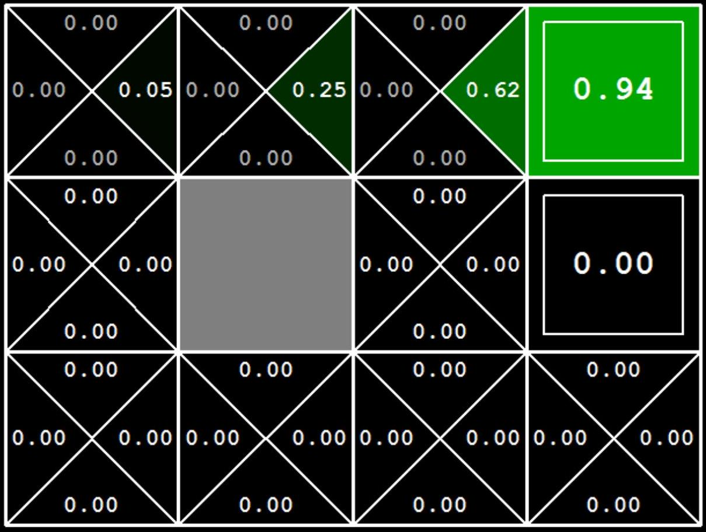

Reinforcement Learning
From Value Iteration to Q-Learning and Function Approximation
- What I built: A suite of RL agents that learn optimal policies from scratch.
- Why it matters: Demonstrates the progression from offline planning (MDPs) to online learning (Q-Learning) used in modern AI.
- Proof: Agents successfully navigate complex grid worlds and learn to win Pacman via trial and error.
Problem / Goal
The goal of this project was to implement core reinforcement learning algorithms to enable an agent to learn optimal behavior in a stochastic environment.
We moved from model-based planning (where the world's rules are known) to model-free learning (where the agent must learn from experience), and finally to function approximation to handle large state spaces.
My Contribution
I implemented a complete RL pipeline:
- Value Iteration: Offline planning using dynamic programming to compute optimal policies for known MDPs.
- Q-Learning: Model-free temporal difference learning with epsilon-greedy exploration.
- Approximate Q-Learning: Feature-based function approximation to generalize across states in large environments.
Technical Approach
1. Value Iteration (Model-Based)
Value iteration computes the optimal value function $V^*(s)$ using the Bellman optimality equation. I implemented this using batch updates to ensure consistency.
$$ V_{k+1}(s) = \max_{a} \sum_{s'} T(s, a, s') [ R(s, a, s') + \gamma V_{k}(s') ] $$
2. Q-Learning (Model-Free)
Q-learning learns from experience without knowing the transition model. The agent updates its estimates incrementally: $$ Q(s, a) \leftarrow (1 - \alpha) Q(s, a) + \alpha [ r + \gamma \max_{a'} Q(s', a') ] $$
def update(self, state, action, nextState, reward):
"""Update Q-value based on observed transition"""
old_q = self.getQValue(state, action)
sample = reward + self.discount * self.computeValueFromQValues(nextState)
self.qValues[(state, action)] = (1 - self.alpha) * old_q + self.alpha * sample3. Approximate Q-Learning (Function Approximation)
For large grids where storing a Q-table is impossible, I implemented linear function approximation. The agent learns weights for features (e.g., "distance to ghost") rather than specific states.
def getQValue(self, state, action):
"""Q(s,a) = Σ f_i(s,a) * w_i"""
features = self.featExtractor.getFeatures(state, action)
qValue = 0.0
for feature in features:
qValue += self.weights[feature] * features[feature]
return qValueValidation / Results
The agents were validated on various grid worlds:
- Bridge Crossing: Tuning noise parameters allowed regular Q-learning agents to cross a narrow bridge without falling.
- Pacman: The approximate Q-learning agent learned to clear the board and avoid ghosts on "mediumClassic" maps after comparable few training episodes, demonstrating effective generalization.
Lessons + Next Steps
Key Insight: Features enable generalization. When the agent learns "avoid ghosts within distance 2" on one part of the board, this knowledge transfers to all positions. This is the foundation of Deep RL.